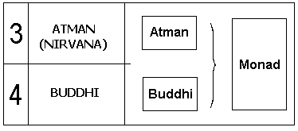
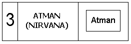
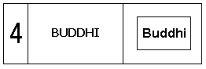
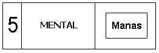
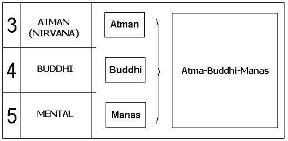
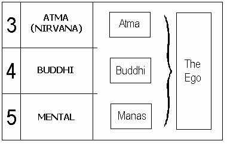
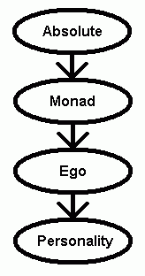

Lessons in Theosophy
Lesson 11, Monad, Atma,
Ego, Causal Body, etc.
The human “soul” exists in different aspects: the Monad, the Ego, etc.
The nature of each of these aspects are explained here:
“Man’s inner being has three aspects, according to occultism, analogous to [Saint]
Paul's divisions of spirit, soul and body. Essentially man is a point of consciousness
in the divine ground from which all emerges. This One Reality remains forever an undivided unity.
Yet it emanates rays creating the immortal, indestructible Atman, as it is termed in Sanskrit.
This ray is destined to become involved with denser and denser matter in order to obtain definiteness
in the worlds of material expression. Clothed in a film of rarest matter it becomes the monad.
Further encased in material from the higher mental realm, it becomes what Leadbeater calls the ego.
His use of the word is far different from any modern usage. He means Atma-Buddhi-Manas, the spiritual
triad or soul of man, which has a stable locus on the higher mental plane. This is the reincarnating
entity which unfolds its powers by generating personalities over and over
in the various cultures of man.”
(Charles Leadbeater, The Inner Life, page xxiii online
or hardcopy)
---
The following is a chart which shows the different aspects of a human being.
|
The Seven Planes of Existence ?Monad, Ego, etc.
The Monad has three aspects, the Atman, Buddhi, and Manas. These three make up the Ego. From the Ego appear the
causal body, mental body, and astral body, which “ensoul” the physical body.
Keeping track of all these different aspects can be confusing. If necessary, read the summary first
to give you an idea of the general organization of the different aspects of being human, then return here to read a description
of each aspect.
-- Monad --

The story begins with the Absolute. From the Absolute comes the
Divine Fire. A spark of this Divine Fire is differentiated into a ‘Divine Spark‘, and is called the Monad.
“...what
is then the Monad proper? It is that homogeneous spark which radiates
in millions of rays from the primeval ‘Seven’.... It is the EMANATING spark
from the UNCREATED Ray — a mystery.”
(H.P. Blavatsky, The Secret Doctrine, Vol. I, page 571
online or hardcopy)
“Essentially man is a point of consciousness
in the divine ground from which all emerges. This One Reality remains forever an undivided unity....
This ray is destined to become involved with denser and denser matter in order to obtain definiteness
in the worlds of material expression. Clothed in a film of rarest matter it becomes the monad.”
(Charles Leadbeater, The Inner Life, page xxiii online
or hardcopy)
It is difficult to describe the Monad, or to list its attributes. All that can really be said
in a description of the Monad is that it is an individualized expression of the Absolute, a “Divine Spark,” that exists on the
Anupapaka Plane of Existence.
For further reading on the Monad:
-- Atman --

The Atman exists on the Atman Plane. It is described as the Individuality of a person.
“Atman may be described as that part of us which is universal in its
aspect father than individualized; it is not that part of us which cognizes
and which says, 'I am I,' nor yet that which declares 'I am,' but rather,
'I am one with ALL.' ?
(The Divine Plan, by Geoffrey Barborka, pp. 9-10)
The Atman does not manifest on lower planes because it cannot.
[Atman] ?.. is not able to function on the lower planes of being nor in the physical world.
It may only contact the lower planes by means of an upadhi (to use the
technical term). Upadhi is generally given the meaning of a 'base' or
a 'vehicle,' although it may also be rendered a substitute, an appearance,
a disguise of the spirit, or 'veil of spirit' ... upadhi may be
rendered that which is deposited by Atman ?namely the sixth principle, Buddhi.?
(The Divine Plan, by Geoffrey Barborka, p. 10)
-- Buddhi --

Buddhi is the vehicle of Atman.
[Buddhi is] ?.. that which is deposited by Atman ?namely, the
sixth principle....
“Buddhi ?derived from the verbal root budh, to know, to enlighten ?is
variously rendered as the Spiritual Soul, the intelligence, the power of
discernment, intuition. In the Esoteric Philosophy, Buddhi is the upadhi,
or 'veil of spirit,' of Atman and functions in man as the Discriminating
Principle.?
(The Divine Plan, by Geoffrey Barborka, p. 10)
[Atman] ?..does not manifest Himself on any plane below the highest, but in the [Buddhi] He descends
to the [next lower] plane and draws round Himself a garment of its matter, thus making a quite separate expression of Him.”
(Charles Leadbeater, The Inner Life, page 150 online
or hardcopy)
-- Manas --

Manas is the fifth Principle (which has no connection to the fact it is on the fifth Plane of Existence), and it unites the lower aspects with the Higher Aspects.
“Manas is the fifth principle in man,
in the sevenfold classification. The word is derived from the Sanskrit
verbal root man, to think, to cogitate, to reflect, hence the thinking parts of man,
the Mind-Principle. The is the pivotal principle in man, and acts
in a dual capacity. It may seek to join the sixth principle, Buddhi, or it
may tend towards the lower aspect of man's nature, the desire principle,
Kama.?
(The Divine Plan,
by Geoffrey Barborka, p. 10)
-- Atma-Buddhi-Manas --

The three aspects, Atman, Buddhi, and Manas combine into a single object, called the Atma-Buddhi-Manas.
A great deal of information has been written in Theosophical literature about the Atma-Buddhi-Manas.
“These three are the ‘three
persons in one God,’ of which Christianity teaches, telling us
in its Athanasian creed that we should worship ‘One God in
Trinity and Trinity in Unity, neither confounding the persons nor
dividing the substance’ — that is to say, never confusing in
our minds the work and function of the three separate manifestations,
each on its own plane, yet never for a moment forgetting the eternal
unity of the ‘substance,’ that which lives behind all
alike on the highest plane, at the level where these three are one.”
(Charles Leadbeater, The Inner Life, pages 150-151 online
or hardcopy)
-- Ego --

The Atma-Buddhi-Manas is considered to be one manifestation called the Ego. (It is important not to confuse it with the
Ego of modern psychology.)
The Ego then puts out its own manifestations — the causal, mental, and astral bodies. These,
along with the physical body, constitute a human being.
“The spirit is triple upon the [Atman] plane, and the first of its three manifestations [Atman] does not descend below that level. The second manifestation descends one stage, on to the fourth plane, and clothes itself with its matter, and then we call it buddhi. Just as before, the third aspect descends two planes, and shrines itself in matter of the highest level of the mental plane, and we call that manas, and this trinity of atma-buddhi-manas, manifesting in the causal body, is what we call the ego.
“Never forget that the ego is not the manas only, but the spiritual triad; at our present stage of evolution he rests in his causal body on the higher levels of the mental plane, but as he passes onwards his consciousness will be centered on the buddhic plane, and afterwards,
when he attains adeptship,
on the nirvanic.”
(Charles Leadbeater, The Inner Life, page 151 online
or hardcopy)
See also the illustration in C. Jinarajadasa’s The First Principles of Theosophy,
page 166 online
or
hardcopy.
Look for the phrase "The Reincarnating Ego" just to the right of the center of the diagram.
The Ego is also called the Individuality in Theosophical literature.
For further reading on the Ego:
-- Emanations from the Ego --
|
From the Ego come the causal body, the mental body, and the astral body.
[The] “...ego inhabits a causal body, a vehicle built
of the matter of the lowest of the three planes to which he belongs. He then puts
himself further down into manifestation, and takes three lower vehicles, the mental, astral and physical bodies.”
(Charles Leadbeater, The Inner Life, pages 313-314 online or
hardcopy.)
-- Causal Body --
|
These attributes are described in the charts
in The First Principles of Theosophy page 96,
and page 156.
Humans have causal bodies, and animals do not. Humans are individualized (having a
single causal body), while animals come from a group-soul (and return to the group-soul
after each incarnation). It is the causal body that is created during what is called “individualization,”
or the creation of a causal body for a human's initial incarnation.
(C. Jinarajadasa,The First Principles of Theosophy, page 186 illustration online
or hardcopy)
The same causal body exists throughout a human's many incarnations, and is finally discarded
when the person moves on to the Buddhic (Nirvana) level of existence.
(C. Jinarajadasa,The First Principles of Theosophy, page 346 online
or hardcopy)
[The Causal Body is that part of a human being which] “... lasts through the whole life of the
reincarnating soul. It lasts from life to life, carrying on the result of each to the next. Therefore
is it called the causal body, because in this body there are the causes which unfold themselves into
effects on the lower planes of earthly life.
“Now the plan of human development from [the moment a decision is made to start a new reincarnation] is this:
the causal body being formed [so that] there was a vehicle in which everything could be laid up and accumulated, the
receptacle and the storehouse of experience. Passing into earthly life and throwing out ...
a projection of itself, its earthly life is spent in the gathering of experience, in the collecting in the
physical world of certain facts, certain knowledge, that which as a whole we call the experience of life.
Passing through the gateway of death man has to assimilate the experience that he has gathered, and he lives
a life out of the body, when he is no longer to be seen in the physical world, but is dwelling on the astral
and the devachanic planes that lie beyond it. There he works out certain effects and assimilates the experiences
he gathered on earth, working them into his own nature. Each life gives him certain results; these results are
taken and worked up into faculties and powers.
“You see how perfectly regular are the stages of growth in the body that lasts from life to life.
The [Causal Body] puts out a projection from itself on the lower planes, and gathers a harvest of
experience; then it withdraws it with its experiences towards itself, letting it remain in the lower
regions of Devachan for the assimilation of that experience and the building it into faculty, into power,
into capacity; then it withdraws it wholly into itself as the containing vehicle of consciousness; and
then comes another putting forth of this now more highly developed life, which shows on the lower planes
the powers it has gained in this way. Thus there should be a steady and continuous advance, life after
life, the [Causal Body] being the receptacle of all the experiences, and being the permanent man into
which the whole of these experiences are built.”
(Annie Besant, The Path of Discipleship,
paragraphs 89-91 or
pages 120-121 hardcopy)
Consider this example of a causal body, as it remains intact from incarnation to incarnation. Here
is a passage of the causal body's role in the beginning of an incarnation:
“Let us consider the case of an ego who is about to descend into incarnation. We must think of him as resting upon the higher part of the mental plane in his causal body, and having no vehicle lower than that. Since the death of his last physical body he has been drawing steadily inwards, first into his astral and then into his mental vehicle, and at the end of the heaven-life he has cast off even the latter. He then rests for a certain period on his own plane ?a period which varies, according to the stage of his development, from two or three days of unconsciousness in the case of an ordinary undeveloped man to a long period of years of conscious and glorious life in that of exceptionally advanced people. Then he begins once more to turn his attention downwards and outwards. As in the course of his upward movement he has withdrawn his attention from the physical and the astral planes respectively, the permanent atoms have passed into a dormant condition, and have ceased the vigorous vibration which is their usual characteristic. The same thing happens to the mental unit at the end of the heaven-life, and during his rest on his own plane the ego has these three appendages within himself in a quiescent condition.
“When he turns his attention once more to the mental plane, the mental unit immediately resumes its activity, and because of that it at once gathers round it such matter as is required to express that activity. Precisely the same thing happens when he turns his attention to the astral atom, and puts his will into that. It attracts to itself material capable of providing him with an astral body of exactly the same type as that which he had at the end of his last astral life. It is necessary to have this fact clearly in mind, that what he thus acquires as he descends is not a ready-made astral body, but simply the material out of which he is to build an astral body
in the course of the life which is to follow.”
(Charles Leadbeater, The Inner Life, pages 340-341 online
or hardcopy)
For further reading on the Causal Body:
-- Mental Body --
|
These attributes are described in the chart
in The First Principles of Theosophy page 96,
and page 156.
The Mental Body is actually two different bodies, the upper Mental body and the lower Mental Body.
The upper Mental Body is called the Causal Body, while the lower is simply called “The Mental Body.”
The Mental Body is similar to the Astral Body, in that it also has colors and striations, giving it
the look of an aura.
[The Mental Body displays qualities such as] “... courage, dignity, cheerfulness, truthfulness, loyalty....
Such qualities are indicated by differences in the structure of the mental
body, or by changes in its surface; but it might be said, broadly
speaking, that they are represented rather by form than by color.
“It will be remembered that, in the drawings of the mental body
given in [the book Man Visible and Invisible],
the colors which indicate some of
the principal qualities are shown, and something is said as to their
general arrangement in the vehicle. In a general way, all
the colors denoting good qualities are to be found in the upper half, and those
denoting unpleasant qualities are mostly in the lower half. The
violet of high aspiration, the blue of devotion, the rose-color of
affection, the yellow which indicates intellect, and even the orange
of pride or ambition — all these belong to the upper part, while
thoughts prompted by anger, selfishness or jealousy gravitate towards
the bottom of the ovoid. While the illustrations there given fairly
indicate what would be the appearance of the mental body if it ever
were really at rest, there is considerable variation from those types
when the man is in the act of thinking strongly or definitely.”
(Charles Leadbeater, The Inner Life, pages 277-278 online
or hardcopy)
For further reading on the Mental Body:
-- Astral Body --
|
These attributes are described in the chart
in The First Principles of Theosophy page 96,
and page 156.
The astral body of each person resides on the Astral Plane.
For an in-depth discussion of the astral body and the Astral Plane, take a
look at The Astral Plane in “Lesson 7.
For further reading on the Astral Body:
-- The Personality --
The personality is the Earthly manifestation of a person’s will-power, intellect and emotions, as well documented
in modern-day psychology. The Personality is only a fragment of its source, the Causal Body. The Causal Body,
in turn, is only a fragment of its source, the Monad. The purpose of life is for us to make our personality
an instrument for the manifestation of the Causal Body, which, in turn, needs to become an instrument
for the manifestation of the Monad.
Here is a diagram of the attributes of the causal, mental, and astral bodies,
adapted from The First Principles of Theosophy, page 96.
|
-- Physical Body --
The Physical Body is our body here in the physical world. Theosophy teaches that a human being has several
bodies, a physical body, astral body, mental body, etc., that occupy the same space simultaneously. It is
the interaction of all these bodies that make up what is known as the human being.
~~~
-- In Summary --

A human being’s personality consists of three aspects (physical, astral, and mental), which are
manifestations of the Ego. The Ego, in turn, consists of three aspects (Atman, Buddhi, and Manas) which are
manifestations of the Monad. The Monad is a single, individualized
Spark of the Absolute. Our goal in life (probably in some future life)
is to become fully conscious in our astral body while still living in our physical body. Then,
we will strive to become fully conscious in our mental body, etc. etc. (Achieving consciousness at the Nirvana level
indicates no more need for physical birth.) Up we go, step by step, until
we become fully conscious in our Monad. When we have achieved this, we will have reached
the pinnacle of evolution (or that part of it which is taught in Theosophy).
~~~
For further reading on the Principles of Man:
Next: Lesson 12, The Ancient Wisdom vs. Today's Major Religions
|
 |
|
|
|
|
 |
 |
 |
|
|
|
|
copyright © Nick Mojzesz,
2005, 2006, & 2007
all rights reserved. |
| |
| |
|